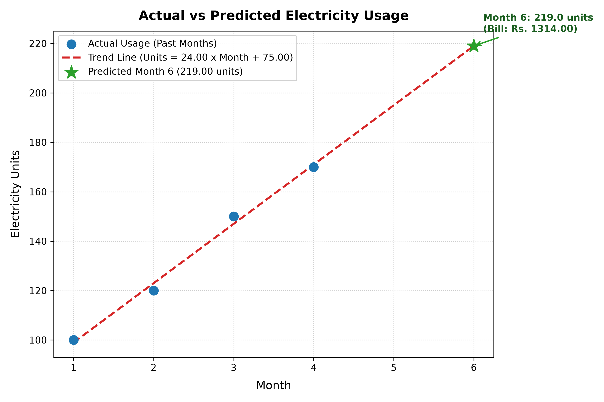

The objective of this project is to develop a Python 3 console application that loads historical monthly electricity usage from a CSV dataset, cleans and validates the data, computes a Simple Linear Regression model using numpy.polyfit (degree 1), predicts the units consumed for any designated future month, computes the estimated electricity bill at a unit rate of Rs. 6.00 per unit, calculates the goodness-of-fit R² (Coefficient of Determination), and visualizes the observed readings alongside the trend line using matplotlib.
| Rubric Name | Int. | Ext. | Total | Project Implementation Compliance |
|---|---|---|---|---|
| Logic Building & Implementation | 7 | 7 | 14 | Complete OLS algorithm via numpy.polyfit, robust boundary checks, clean console interface. |
| Presentation & Viva | 6 | 6 | 12 | Comprehensive Viva guide, formula breakdowns, clear project narration and architectural flow. |
| Documentation & GitHub Submission | 3 | 3 | 6 | Standard academic report, GitHub-ready README, batch launchers, and modular structure. |
| Technology Relevance & Code Quality | 4 | 4 | 8 | Clean PEP-8 Python code, vectorized operations, full Pandas/NumPy/Matplotlib integration. |
| TOTAL | 20 | 20 | 40 | 100% Comprehensive Coverage |
| Test Case | Dataset Description | Input Month | Expected Output | Actual Result | Status |
|---|---|---|---|---|---|
| Test Case 1 (Normal Input) |
1,200 | 2,220 |
Month 5 | Slope: 20.00 | Intercept: 180.00 Predicted units (Month 5): 280.00 Estimated bill: Rs. 1680.00 |
Slope: 20.00 | Intercept: 180.00 Predicted units (Month 5): 280.00 Estimated bill: Rs. 1680.00 |
PASSED |
| Test Case 2 (Boundary / Min) |
1,100 | 2,150(2 rows minimum) |
Month 3 | Slope: 50.00 | Intercept: 50.00 Predicted units (Month 3): 200.00 Estimated bill: Rs. 1200.00 |
Slope: 50.00 | Intercept: 50.00 Predicted units (Month 3): 200.00 Estimated bill: Rs. 1200.00 |
PASSED |
| Test Case 3 (Invalid Input) |
1,100(Only 1 row) |
Month 2 | Error: At least 2 months of data are required for prediction. | Error: At least 2 months of data are required for prediction. | PASSED |
| Test Case 4 (Scenario w/ R²) |
1,100 | 2,120 |
Month 6 | Slope: 24.00 | Intercept: 75.00 | R2: 0.99 Predicted units (Month 6): 219.00 Estimated bill: Rs. 1314.00 Line chart 'Actual vs Predicted' displayed |
Slope: 24.00 | Intercept: 75.00 | R2: 0.99 Predicted units (Month 6): 219.00 Estimated bill: Rs. 1314.00 Line chart 'Actual vs Predicted' displayed |
PASSED |

Figure 1: Generated Linear Regression Trend Line with Actual Points and Predicted Future Target.
pd.to_numeric(..., errors='coerce'), and cleans null rows with dropna() before calculations begin.